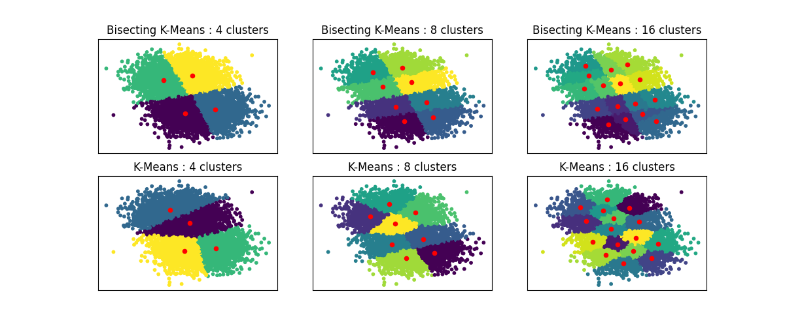

Note
Go to the end to download the full example code or to run this example in your browser via Binder
Bisecting K-Means and Regular K-Means Performance Comparison¶
This example shows differences between Regular K-Means algorithm and Bisecting K-Means.
While K-Means clusterings are different when increasing n_clusters, Bisecting K-Means clustering builds on top of the previous ones. As a result, it tends to create clusters that have a more regular large-scale structure. This difference can be visually observed: for all numbers of clusters, there is a dividing line cutting the overall data cloud in two for BisectingKMeans, which is not present for regular K-Means.
import matplotlib.pyplot as plt
from sklearn.cluster import BisectingKMeans, KMeans
from sklearn.datasets import make_blobs
print(__doc__)
# Generate sample data
n_samples = 10000
random_state = 0
X, _ = make_blobs(n_samples=n_samples, centers=2, random_state=random_state)
# Number of cluster centers for KMeans and BisectingKMeans
n_clusters_list = [4, 8, 16]
# Algorithms to compare
clustering_algorithms = {
"Bisecting K-Means": BisectingKMeans,
"K-Means": KMeans,
}
# Make subplots for each variant
fig, axs = plt.subplots(
len(clustering_algorithms), len(n_clusters_list), figsize=(12, 5)
)
axs = axs.T
for i, (algorithm_name, Algorithm) in enumerate(clustering_algorithms.items()):
for j, n_clusters in enumerate(n_clusters_list):
algo = Algorithm(n_clusters=n_clusters, random_state=random_state, n_init=3)
algo.fit(X)
centers = algo.cluster_centers_
axs[j, i].scatter(X[:, 0], X[:, 1], s=10, c=algo.labels_)
axs[j, i].scatter(centers[:, 0], centers[:, 1], c="r", s=20)
axs[j, i].set_title(f"{algorithm_name} : {n_clusters} clusters")
# Hide x labels and tick labels for top plots and y ticks for right plots.
for ax in axs.flat:
ax.label_outer()
ax.set_xticks([])
ax.set_yticks([])
plt.show()
Total running time of the script: (0 minutes 1.317 seconds)